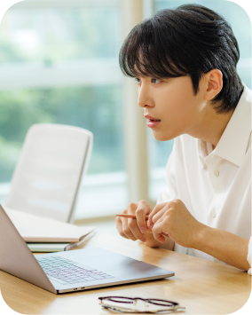
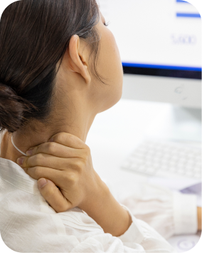

장시간 화면 사용
오래 내려다보는 습관은 머리의 무게를 목과 어깨에 집중시킵니다.화면을 내려다볼수록 커지는 목의 부담
고개를 숙이거나 머리를 앞으로 내민 자세가 반복되면
목과 어깨 주변에 부담이 쌓일 수 있습니다.
스마트폰이나 모니터를 볼 때 머리가 앞으로 나온 자세가 반복되면 목의 자연스러운 곡선과 주변 근육의 균형이 흐트러질 수 있습니다.
목 뒤가 쉽게 피로하거나 어깨가 자주 뭉친다면 일상 속 자세부터 점검해 보세요.

오래 내려다보는 습관은 머리의 무게를 목과 어깨에 집중시킵니다.화면을 내려다볼수록 커지는 목의 부담

높이가 맞지 않는 모니터와 의자가 목의 긴장을 높일 수 있습니다.맞지 않는 작업 높이로 인한 목의 긴장
등과 어깨의 정렬이 무너지면 고개가 앞으로 나오기 쉽습니다.등·어깨 정렬 변화로 앞으로 나온 고개
활동량이 줄어들면 목과 어깨를 지지하는 힘이 약해질 수 있습니다.활동 부족으로 약해지는 목·어깨 근력
거북목·일자목은 목 주변의 긴장과 통증뿐 아니라 어깨와 등까지 불편함을 이어지게 할 수 있습니다.
거북목·일자목은 생활 자세를 점검하고 긴장된 근육과 약해진 부위의 균형을 함께 관리해야 합니다.
증상과 움직임의 정도에 맞춰 통증을 줄이고 편안한 자세를 되찾도록 돕습니다.

진통·소염제 등을 활용해 목과 어깨의 통증과 염증을 완화합니다.
긴장된 근육을 이완하고 목의 움직임과 기능을 회복하도록 돕습니다.


통증 유발점이나 신경 주변에 약물을 적용해 통증 완화를 돕습니다.
목의 모양만으로 통증의 원인이나 정도를 판단하지 않습니다. 생활 자세, 근육 상태와 신경 증상 등을 함께 확인해야 합니다.
고개를 숙인 채 오래 버티는 시간을 줄이고, 화면 높이와 작업 자세를 점검하는 것이 도움이 될 수 있습니다. 운동은 통증 상태에 맞춰 안내받으세요.
신경이 눌리는 질환 등 다른 원인도 확인해야 합니다. 저림이 지속되거나 힘이 빠지는 경우에는 자세 문제로만 생각하지 말고 진료받으세요.